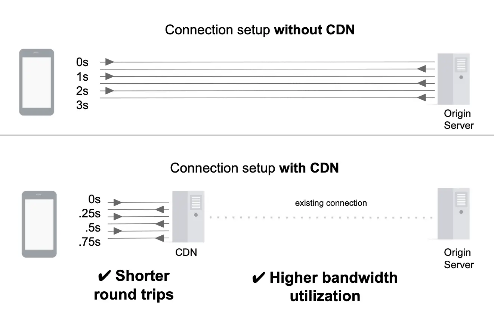

短答
CDN 边缘节点可以在比源站更靠近访客的地方完成连接。
对比图显示握手所需的长距离往返更少。这只对由距离造成的那一部分首字节时间有帮助。如果边缘连上之后源站仍然慢慢生成 HTML，文档仍然会晚。SEO 健康不把 CDN 主机名当成排名变化。
定义
TLS 版本和会话恢复也在这幅图里。它们是连接细节。它们不写标题、规范链接或答案。站点可以握手很快，同时仍是客户端渲染的壳。审计把这些记录分开。
渲染对爬虫意味着什么变化
把连接建立和源站时间分开，不要指望 CDN 去填一个空的 HTML 壳。
在边缘缓存是第二个决定，写在 HTTP 缓存的说明里。只做代理、不缓存的 CDN 仍然只改变握手，不改变字节。写明你买的是哪一种。如果有实验室轨迹，抽样一条产品 HTML URL 的时序，并标明那是实验室轨迹。

要检查什么
- 握手距离与源站生成时间分开
- CDN 是缓存还是只做代理
- HTML 壳的问题留在渲染记录上
- 有实验室轨迹时标明为实验室轨迹
- 没有把索引承诺附在主机名上
一个结构示例
团队把 DNS 迁到 CDN，并宣布索引会改善。产品 HTML 仍然是源站花半秒生成的壳，然后再注水。健康记录写的是握手移动了，壳没有。渲染修复仍然是 HTML。
它不声称什么
更短的握手不保证排名或引用。
Mika Visibility 把它归到哪里
Mika Visibility 把渲染当作 SEO 健康问题：当模板依赖 JavaScript 时，重要 HTML 能否在有脚本和无脚本两种情况下被获取并比较。这种比较不是 GEO 审计，也不是市场覆盖计划。发现要附在样例 URL 上。模板改完之后的再审计，用来确认修复。
对比图说的是连接建立，不是文档质量。
常见问题
CDN 边缘节点缩短什么？
CDN 边缘节点可以在比源站更靠近访客的地方完成连接。
它不会填上什么？
把连接建立和源站时间分开，不要指望 CDN 去填一个空的 HTML 壳。
更短的握手能保证排名吗？
更短的握手不保证排名或引用。
下一步
做一次结构化的 SEO + GEO 审计，查看健康发现、增长缺口和可以执行的蓝图。
更清晰的实体、答案、证据和上下文，会让页面更容易被理解与引用。任何回答产品中的结果都不作保证。